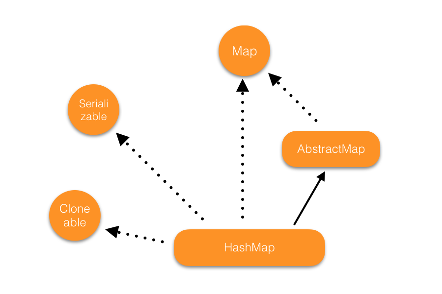
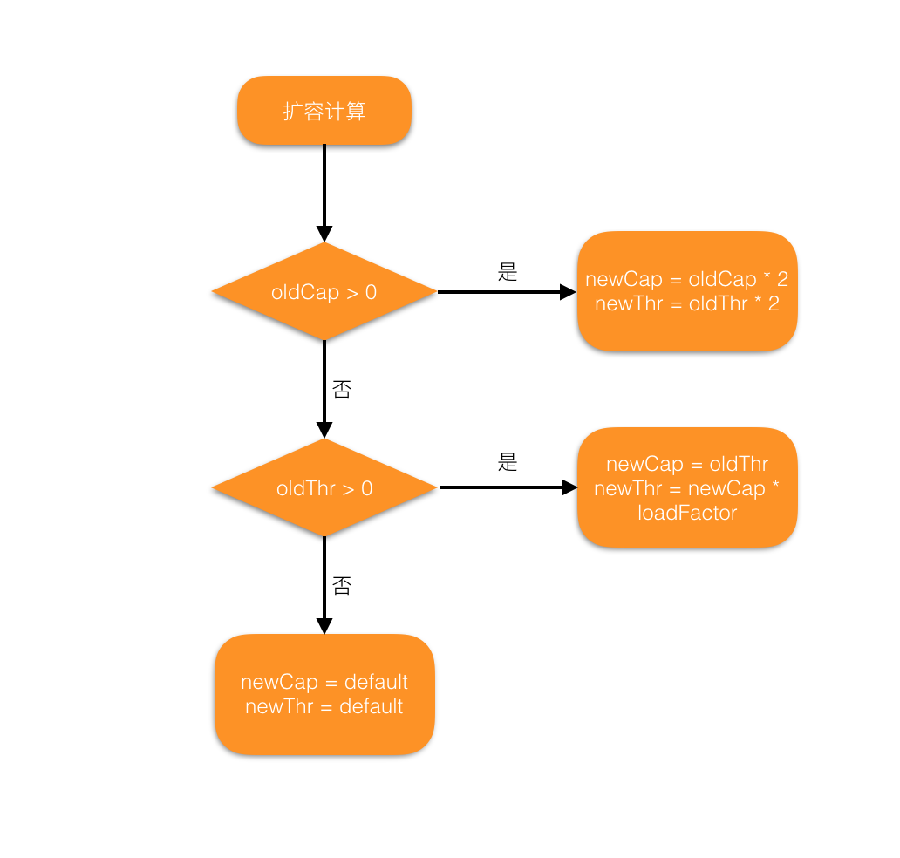
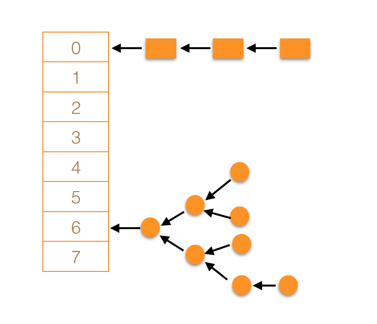

Java容器系列-HashMap源码分析
HashMap 实现了 Map 接口。HashMap 使用的很广泛，但不是线程安全的，如果在多线程中使用，必须需要额外提供同步机制（多线程情况下推荐使用 ConCurrentHashMap）。

HashMap 的类图相对简单，主要就是继承了 AbstractMap，有一点需要注意，虽然没有实现 Iterable 接口，但 HashMap 本身还是实现了迭代器的功能。
本文基于 JDK1.8
成员变量及常量
HashMap 是一个 Node[] 数组，每一个下标称之为一个桶。
每一个键值对都是使用 Node 来存储，这是一个单链表的数据结构。每个桶上可以通过链表来存储多个键值对。
常量
HashMap 中用到的常量及其意义如下：
// 初始容量（桶的个数） 2^4
static final int DEFAULT_INITIAL_CAPACITY = 1 << 4;
// 最大容量（桶的个数） 2^30
static final int MAXIMUM_CAPACITY = 1 << 30;
// 默认的装载因子(load factor)，除非特殊原因，否则不建议修改
static final float DEFAULT_LOAD_FACTOR = 0.75f;
// 单个桶上的元素个数大于这个值从链表转成树（树化操作）
static final int TREEIFY_THRESHOLD = 8;
// 单个桶上元素少于这个值从树转成链表
static final int UNTREEIFY_THRESHOLD = 6;
// 只有桶的个数大于这个值时，树化操作才会真正执行
static final int MIN_TREEIFY_CAPACITY = 64;
成员变量
HashMap 中用到的成员变量如下：
// HashMap 中的 table，也就是桶
transient Node<K,V>[] table;
// 缓存所有的键值对
transient Set<Map.Entry<K,V>> entrySet;
// 键值对的个数
transient int size;
// HashMap 被修改的次数，用于 fail-fast 检查
transient int modCount;
// 进行 resize 操作的临界值，threshold = capacity * loadFactor
int threshold;
// 装载因子
final float loadFactor;
table 是一个 Node 数组，length 通常是 $2^n$，但也可以为 0。
初始化
HashMap 的初始化其实就只干了两件事：
- 确定 threadhold 的值
- 确定 loadFactor 的值
用户可以通过传入初始的容量和装载因子。HashMap 的容量总是 $2^n$，如果传入的参数不是 $2^n$，也会被转化成 $2^n$：
// HashMap.tableSizeFor()
int n = -1 >>> Integer.numberOfLeadingZeros(cap - 1);
return (n < 0) ? 1 : (n >= MAXIMUM_CAPACITY) ? MAXIMUM_CAPACITY : n + 1;
Integer.numberOfLeadingZeros() 返回一个 int 类型（32位）在二进制表达下最后一个非零数字前面零的个数。比如 2：
0000 0000 0000 0000 0000 0000 0000 010
所以 Integer.numberOfLeadingZeros(3) 返回 30。
-1 在用二进制表示为：
1111 1111 1111 1111 1111 1111 1111 1111
>>> 表示无符号右移，-1 右移 30 位则得到:
0000 0000 0000 0000 0000 0000 0000 011
得到 3。
所以经过了 -1 >>> Integer.numberOfLeadingZeros(cap - 1) 返回的值一定是 $2^n-1$，所以最后返回的值一定是 $2^n$，感兴趣的可以去验证一下。
HashMap 在初始化的时候也可以接受一个 Map 对象，然后把传入的 Map 对象中的元素放入当前的容器中。
除了传入 Map 对象的实例化方式，都不会实际去创建桶数组，这是一种延迟初始化的方式，在插入第一个键值对的时候，会调用 resize() 方法去初始化桶。
下面来详细看看 resize() 操作。
扩容机制
与 ArrayList 不同，HashMap 没有手动扩容的过程，只会根据容器当前的情况自动扩容。
扩容操作由 resize() 方法来完成，扩容操作主要干三件事：
- 确定桶的个数
- 确定 threshold 的值
- 将所有的元素移到新的桶中
参数说明
oldCap: 扩容前桶的个数
oldThr: 扩容前 threshold 的值
newCap: 扩容后桶的个数
newThr: 扩容后 threshold 的值
扩容流程如下：

扩容时会新建一个 Node（桶）数组，然后把原容器中的键值对重新作 hash 操作，然后放到新的桶中。
HashMap 的容量有上限，为 $2^{30}$，也就是 1073741824，桶的个数不会超过这个数，threshold 的最大值是 2147483647，是最大容量的两倍少1。
这样设置代表这个如果桶的个数达到了最大容量，就不会再进行扩容操作了。
具体实现

HashMap 的结构图如上，每个桶都是一个链表的头结点，对于 hash 值相同（哈希冲突）的 key，会放在同一个桶上。这也是 HashMap 解决哈希冲突的方法称之为拉链法。在 JDK1.8 以后，在插入键值对时，使用的是尾插法，而不再是头插法。
HashMap 与 Hashtable 的功能大致上一致。HashMap 的 key 和 value 都可以为 null。下面是主流 Map 的键值对是否可以为 null 的对比：
| Map | key 是否可以为null | value 是否可以为 null |
|---|---|---|
| HashMap | 是 | 是 |
| Hashtable | 否 | 否 |
| ConcurrentHashMap | 否 | 否 |
| TreeMap | 否 | 是 |
HashMap 不是线程安全的。在多线程环境中，需要使用额外的同步机制，比如使用 Map m = Collections.synchronizedMap(new HashMap(...));。
HashMap 也支持 fail-fast 机制。
hash 方法
hash 方法对 HashMap 非常重要，直接会影响到性能。键值对插入位置由 hash 方法来决定。假设 hash 方法可以让元素在桶上均匀分布，基本操作如 get 和 put 操作就是常量操作时间（$O(1)$）。
hash 方法需要有两个特点：
- 计算的结果需要足够随机
- 计算量不能太大
HashMap 中具体实现如下：
static final int hash(Object key) {
int h;
return (key == null) ? 0 : (h = key.hashCode()) ^ (h >>> 16);
}
>>> 是无符号右移操作，上面已经说到。假设现在有个 key 是 “name”，在我电脑上计算出来的值是：3373707，转变成二进制就是：
0000 0000 0011 0011 0111 1010 1000 1011
右移 16 位后：
0000 0000 0000 0000 0000 0000 0011 0011
然后进行异或运算：
0000 0000 0011 0011 0111 1010 1011 1000
最后拿这个值与 HashMap 的长度减 1 进行与操作，因为 n 一定是 $2^x$，所以 (n-1) 的二进制全部是由 1 组成，下面这个操作相当于取 hash 值的后几位：
index = (n - 1) & hash
index 就是键值对的插入位置。
hash() 函数其实就是用来使键值对的插入位置足够随机，称之为扰动函数，如果对具体的策略感兴趣，可以参考这篇文章。
注：Object.hashcode() 是一个本地方法，返回对象的内存地址。Object.equals() 方法默认比较对象的内存地址，如果某个类修改了 equals 方法，那么 hashcode 方法也需要修改，要让 equals 和 hascode 的行为是一致的。否在在查找键值对的过程中就会出现 equals 结果是 true， hashcode 却不一样，这样就无法找到键值对。
容量和装载因子
使用 HashMap 时，有两个参数会影响它的性能：初始容量和装载因子。
容量是指 HashMap 中桶的个数，初始容量是在创建实例时候所初始化桶的个数。
装载因子用来决定扩容的时机，进行扩容操作时，会把桶的数量设为原来的两倍，容器中所有的元素都会重新分配位置，扩容的代价很大，应该尽可能减少扩容操作。
装载因子的默认值是 0.75，这是权衡时间性能和空间开销的一个值。装载因子设置的越大，那么空间的开销就会降低，但查找等操作的性能就会下降，反之亦然。
在初始化 HashMap 的时候，初始容量和装载因子的值必须仔细衡量，以便尽可能减少扩容操作，如果没有特殊的情况，使用默认的参数就可以。
遍历 HashMap 所需的时间与容器的容量（桶的个数）及元素的数量成正比。如果迭代的时间性能很重要，就不要把初始容量设置的太大，也不要把装载因子设置的很小。
树化操作
在讲解具体的方法前，需要了解 HashMap 中一个重要的内部操作：树化。
HashMap 使用拉链法来解决哈希冲突问题。多个键值对被分配到同一个桶的时候，是以链表的方式连接起来。但这样会面临一个问题，如果链表过长，那么 HashMap 的很多操作就无法保持 $O(1)$ 的操作时间。
极端情况下，所有的键值对在一个桶中。那么 get、remove 等操作的时间复杂度度就都是 $O(n)$。HashMap 的解决方法是用红黑树来替代链表，红黑树查询的时间复杂度稳定在 $O(logn)$。
HashMap 在单个桶的的元素的个数超过 8(TREEIFY_THRESHOLD) 且桶的个数大于 64(MIN_TREEIFY_CAPACITY) 时，会把桶后面的链表转成树（类似于 TreeMap），这个操作称之为树化操作。
需要注意的是，当单个桶上的元素超过了8个，但桶的个数少于 64 时，不会进行树化操作，而是会进行扩容操作，代码如下：
// HashMap.treeifyBin() method
final void treeifyBin(Node<K,V>[] tab, int hash) {
int n, index; Node<K,V> e;
if (tab == null || (n = tab.length) < MIN_TREEIFY_CAPACITY)
resize();
// other code...
}
树化的过程是把链表的所有节点都替换成 TreeNode，然后再组成一棵红黑树（红黑树的具体构建过程可以查看这篇文章）。而且在链表转成树的过程中，每个节点之间的相对关系不会变化，通过节点的 next 变量来保持这个关系。
当树上的节点树少于 6(UNTREEIFY_THRESHOLD) 时，树结构会重新转化成链表。把树的每一个节点换成链表的节点，通过 next 重新组成一个链表：
// HashMap.ubtreeify()
final Node<K,V> untreeify(HashMap<K,V> map) {
Node<K,V> hd = null, tl = null;
for (Node<K,V> q = this; q != null; q = q.next) {
Node<K,V> p = map.replacementNode(q, null);
if (tl == null)
hd = p;
else
tl.next = p;
tl = p;
}
return hd;
}
即使遇到极端情况（所有的键值对在一个桶上），树化操作也会保证 HashMap 的性能也不会退化太多。
增删改查操作
get 方法：
get 方法的实际操作是使用 getNode 方法来完成的。
// HashMap.getNode()
final Node<K,V> getNode(int hash, Object key) {
// 首先检查容器是否为 null 以及 key 在容器中是否存在
if ((tab = table) != null && (n = tab.length) > 0 &&
(first = tab[(n - 1) & hash]) != null) {
// 找到相应的桶，从第一个节点开始查找，如果第一个节点不是要找的，后续节点就分成链表或者红黑树进行查找
if (first.hash == hash &&
((k = first.key) == key || (key != null && key.equals(k))))
return first;
if ((e = first.next) != null) {
// 如果链表已经转成了红黑树，则在红黑树中查找
if (first instanceof TreeNode)
return ((TreeNode<K,V>)first).getTreeNode(hash, key);
do {
// 如果不是树，则在链表中查找
if (e.hash == hash &&
((k = e.key) == key || (key != null && key.equals(k))))
return e;
} while ((e = e.next) != null);
}
}
}
put 方法：
用于插入或者更新键值对，实际使用的是 HashMap.putVal() 方法来实现。如果是第一次插入键值对，会触发扩容操作。
// HashMap.putVal() 删减了部分代码
final V putVal(int hash, K key, V value, boolean onlyIfAbsent,
boolean evict) {
Node<K,V>[] tab; Node<K,V> p; int n, i;
// 如果是第一次插入键值对，首先会进行扩容操作
if ((tab = table) == null || (n = tab.length) == 0)
n = (tab = resize()).length;
// 如果一个桶的还没有插入键值对，则对第一个节点进行初始化
if ((p = tab[i = (n - 1) & hash]) == null)
tab[i] = newNode(hash, key, value, null);
else {
Node<K,V> e; K k;
if (p.hash == hash &&
((k = p.key) == key || (key != null && key.equals(k))))
e = p;
// 如果是红黑树的结构，则按照红黑树的方式插入或者更新节点
else if (p instanceof TreeNode)
e = ((TreeNode<K,V>)p).putTreeVal(this, tab, hash, key, value);
// 否则按照链表的方式插入或者更新节点
else {
for (int binCount = 0; ; ++binCount) {
if ((e = p.next) == null) {
// 如果没有找到键值对，则新建一个节点，把键值对插入
p.next = newNode(hash, key, value, null);
// 如果链表的长度大于等于 8，就会尝试进行树化操作
if (binCount >= TREEIFY_THRESHOLD - 1)
treeifyBin(tab, hash);
break;
}
// 如果找到了 key，则跳出循环
if (e.hash == hash &&
((k = e.key) == key || (key != null && key.equals(k))))
break;
p = e;
}
}
// 如果 key 已经存在，则把 value 更新为新的 value
if (e != null) {
V oldValue = e.value;
if (!onlyIfAbsent || oldValue == null)
e.value = value;
return oldValue;
}
}
// fail-fast 版本号更新
++modCount;
// 如果容器中元素的数量大于扩容临界值，则进行扩容
if (++size > threshold)
resize();
return null;
}
remove 方法的实现与 get 方法类似。
clear 方法会将 map 中所有的桶都置为 null 来清空键值对。
其他的操作都是组合这几个基本的操作来完成。
JDK8 的新特性
在 JDK8 中，Map 中增加了一些新的方法，HashMap 对这些方法都进行了重写，加入了对 fail-fast 机制的支持。
这些方法是用上面的增删改查方法来实现的。
getOrDefault 方法，在值不存在的时候，返回一个默认值：
HashMap map = new HashMap<>();
map.put("name", "xiaomi");
map.getOrDefault("gender","genderNotExist"); // genderNotExist
forEach 方法，遍历 map 中的键值对，可以接收 lambda 表达式：
HashMap<String, Object> map = new HashMap<>();
map.put("name", "xiaomi");
map.forEach((k, v) -> System.out.println(k +":"+ v));
putIfAbsent 方法，只有在 key 不存在时才会插入键值对：
HashMap<String, Object> map = new HashMap<>();
map.put("name", "xiaomi");
map.putIfAbsent("gender", "man");
computeIfAbsent 方法用来简化一些操作，下面方法1和方法2功能一样，都是在 key 不存在的情况下，通过某些处理后然后把键值对插入 map：
HashMap<String, Object> map = new HashMap<>();
map.put("name", "xiaomi");
// 方法1：
Integer age = (Integer)map.get("key");
if (age == null) {
age = 18;
map.put("key", age);
}
// 方法2：
map.computeIfAbsent("age", k -> {return 18;});
computeIfPresent 方法则是在键值对存在的情况下，对键值对进行处理，然后再更新 map，下面方法1和方法2功能完全一样：
HashMap<String, Object> map = new HashMap<>();
map.put("name", "xiaomi");
// 方法1：
Integer age = (Integer)map.get("key");
Integer age = 18 + 4;
map.put("key", age);
// 方法2：
map.computeIfPresent("age", (k,v) -> {return 18 + 4;});
merge 方法用来对相同的 key 的 value 进行合并，以下方法1和方法2的功能一致：
HashMap<String, Object> map = new HashMap<>();
map.put("name", "xiaomi");
// 方法1：
Integer age = (Integer)map.get("key");
age += 14;
map.put("key", age);
// 方法2：
map.merge("age", 18, (oldVal, newVal) -> {return (Integer)oldVal + (Integer)newVal;});
其他功能
HashMap 同样也实现了迭代功能，HashMap 中有三个具体 Iterator 的实现：
- KeyIterator: 遍历 map 的 key
- ValueIterator: 遍历 map 的 value
- EntryIterator: 同时遍历 map 的 key 和 value
但是这个三个迭代器都不会直接使用，而是通过调用 HashMap 方法来间接获取。
- KeyIterator 通过 HashMap.keySet() 方法获取并使用
- ValueIterator 通过 HashMap.vlaues() 方法获取并使用
- EntryIterator 通过 HashMap.entrySet() 方法获取并使用
Spliterator 的实现与迭代器的类似，分别对于 key、value 和 key + value 分别实现了 Spliterator。